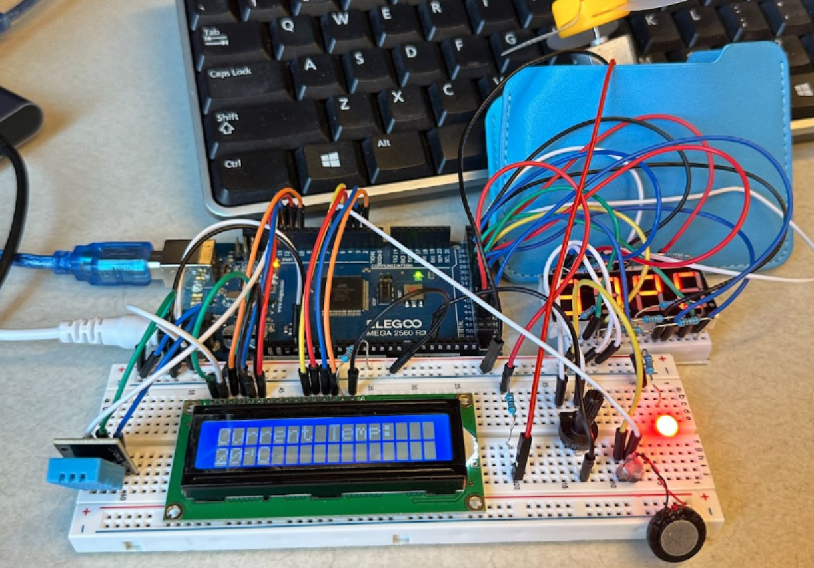

Arduino AC — Automated Fan Controller
I built a small embedded cooling controller that behaves like a simple air conditioner: it reads temperature/humidity, lets the user set a target on a 7-segment display via a potentiometer, and turns a fan on when the measured temperature exceeds the setpoint. I did this project solo to deepen my embedded systems skills.
 -->My role: end-to-end design & implementation — hardware wiring, scheduler integration, device drivers, UI logic, and documentation.
-
System Overview
MCU: Arduino (AVR) • Preemptive task scheduling with FreeRTOS • Inputs: Potentiometer (setpoint), Temp/Humidity sensor • Outputs: 7-segment LED display (target value), DC fan (via driver/transistor) • On-board timers for periodic sensing & UI refresh.
-
Method (Brief)
Implemented FreeRTOS tasks for sensing, UI update, and fan control; read the hardware specs to configure timers, multiplex the 7-segment display, and debounce user input.
-
Interactability
The user turns a potentiometer to set a target temperature shown on the 7-segment display. If Tmeasured ≥ Tset, the controller signals the fan to activate; otherwise it remains off.
-
Implementation Notes
• Learned and used AVR timer hardware for stable task periods and display refresh.
• Mapped 7-segment pinouts and multiplexed digits to reduce I/O usage.
• Wrote lightweight drivers for the sensor and display to fit tight memory.
• Tuned stack/heap and task priorities to keep UI responsive near memory limits. -
Outcome & Discussion
The prototype reliably cools when the sensed temperature crosses the user-defined threshold, demonstrating end-to-end embedded control with scheduling, real-time I/O, and a minimal UI. The build nearly maxed out available Arduino memory, which helped me understand practical limits (RAM/flash, timing jitter, and I/O bandwidth). Next steps include adding hysteresis to prevent fan chatter, logging via UART, and migrating to a more capable MCU for richer UI or PID control.
Project Summary (Short)
Solo project: a FreeRTOS-based Arduino fan controller that lets users set a temperature on a 7-segment display and automatically switches the fan when the measured value exceeds the setpoint. Pushed Arduino close to memory limits, solidifying my embedded fundamentals.
Code & Report: Code